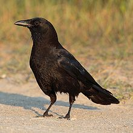

The American crow (Corvus brachyrhynchos) is a large passerine bird species of the family Corvidae. It is a
common bird found throughout much of North America. American crows are the New World counterpart to the carrion
crow and the hooded crow. Although the American crow and the hooded crow are very similar in size, structure and
behavior, their calls and visual appearance are different. The American crow, nevertheless, occupies the same
ecological niche that the hooded crow and carrion crow do in Eurasia.
